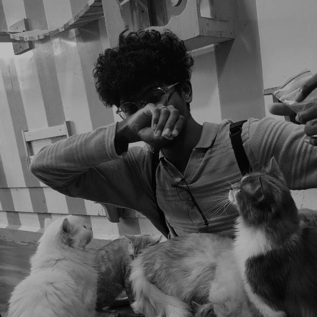

SANTHOSH M
STUDENT

SUMMARY
Computer Science and Engineering student with a strong foundation in competitive programming, data structures, and algorithms.
Skilled in problem-solving and computational thinking.
Currently learning MERN full-stack development to build scalable, responsive
web applications.
Specialized in UI/UX design, graphic design and user-friendly interfaces.Ambitious and enthusiastic about
collaborative innovation, committed to delivering impactful and creative solutions.
EDUCATION
- Sri Sairam Engineering College, Chennai (B.E. CSE) - CGPA : 8.53
- Zion Matriculation Higher Secondary School, Chennai - Percentage : 94
SKILLS
- Languages: Python,Java,HTML,CSS,JS,Java - ⭐⭐⭐⭐
- Frameworks: Spring Boot, Postman, Microsoft Power BI, Canva, Figma, Git/Github - ⭐⭐⭐
- Relevant Coursework: Data Structures & Algorithms, Operating Systems, Object Oriented Programming, Database Management Systems, Software Engineering, Computer Networks - ⭐⭐⭐⭐⭐
My PROJECTS AND INTERNSHIPS
ADDITIONAL INFORMATION
- Languages known: Japanese (N3), English, Tamil, Hindi
- Volunteering Experiences & Clubs : Sairam NSS, Disaster Management Club, Code Club, CSE Department Design Team and Youth United Council of India ( YUCI ) - Technical Coordinator
- NPTEL Certifications: Design Thinking - A Primer, Programming, Data Structures and Algorithms using Python, Joy of Computing using Python, Introduction to Internet Of Things (Topper - 5%), Introduction to Machine Learning
- Achievements:
- Winner in Solveathon 4.0 under SDG Goal 3
- Designed the official college club logo for YUCI Sairam
- Selected out of 296 teams for the IEEE EPICS 2025 Proposal Submissino